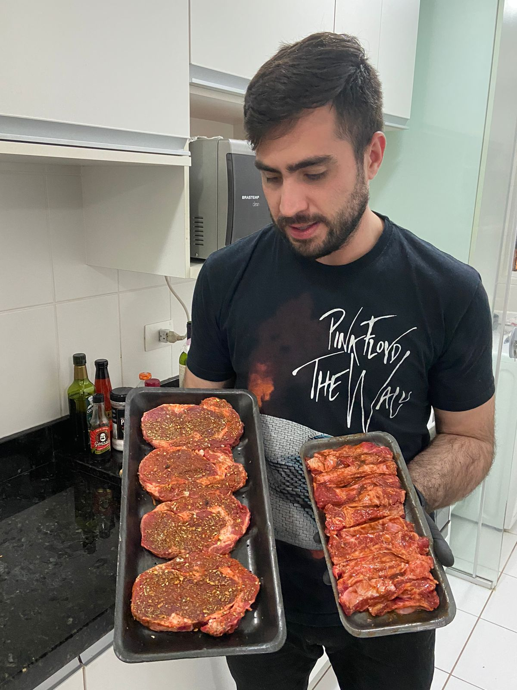

Música
Sou um grande apreciador de música, sendo eclético na maioria dos gêneros musicais, porém sempre tive a preferência pelo Rock, quando criança fui influênciado pela minha família nesse gênero musical. Tenho entre minhas bandas preferidas Pink Floyd e The Doors.